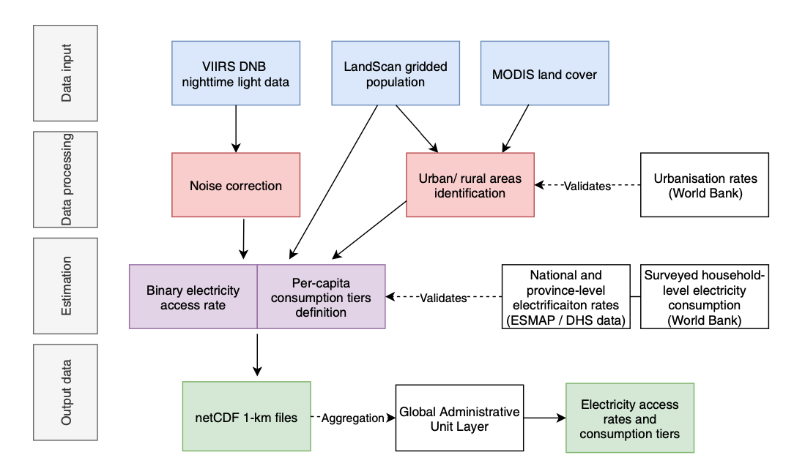

1 Introducción
El Objetivo de Desarrollo Sostenible 7 (ODS 7) de las Naciones Unidas pretende garantizar el acceso a una energía asequible, fiable, sostenible y moderna para todos en 20301. El acceso a los servicios de electricidad (metas 7.1.1 y 7.A y 7.B de los ODS) es una prioridad clave en el marco de este objetivo, también debido a las fuertes interconexiones que presenta con otros objetivos de desarrollo2-5, pero su consecución a nivel mundial presenta retos significativos6. Se necesita información espacialmente explícita, actualizada y armonizada sobre el progreso de la electrificación para identificar dónde pueden centrarse los esfuerzos locales, nacionales e internacionales para lograr los mayores beneficios.
Iniciativas de seguimiento como el portal Progreso hacia una energía sostenible7, el Informe sobre el estado del acceso a la electricidad8 y la publicación de datos recopilados sobre el terreno9,10 han cuantificado el progreso de la electrificación en los últimos 20 años. Se calcula que en 2016 la población mundial sin acceso a la electricidad se redujo por debajo de los 1.000 millones11, en gran medida como resultado de los flujos de inversión internacionales12, el descenso de los costes de las soluciones de acceso distribuido (por ejemplo, la energía solar fotovoltaica)13 y los marcos políticos de apoyo14. De los que siguen sin acceso, unos 600 millones viven en el África subsahariana, donde 15 países tienen niveles de electrificación inferiores al 25%11.
Las imágenes de satélite de las luces nocturnas ofrecen una perspectiva única de la distribución y ubicación de los asentamientos electrificados del mundo. Las luces nocturnas ya se han utilizado como indicador indirecto del acceso a la electricidad28-31, el consumo residencial32-37, la detección de cortes38-40, las fluctuaciones de población y la migración41,42, el PIB regional43,44 y la desigualdad de ingresos45.
Varios estudios han demostrado que la producción de luz nocturna está estrechamente relacionada con la capacidad de generación de electricidad y la actividad económica a escala regional y nacional (Elvidge et al. 1997b, De Souza Filho 2004, Doll et al. 2006, Sutton et al. 2007, Kiran Chand et al. 2009, Ghosh et al. 2010, Henderson et al. 2012).
Hasta la fecha, la mayoría de los estudios se han realizado en el mundo industrializado o en entornos urbanos (Elvidge et al. 1997a, Imhoff et al. 1997, Small et al. 2005, Sutton et al. 2010, Small et al. 2011), donde la producción de luz nocturna suele ser elevada y constante a lo largo del tiempo. Sin embargo, hay pocos conocimientos sistemáticos sobre las propiedades de luz nocturna para detectar la electrificación en entornos rurales del mundo en desarrollo. Se trata de una brecha importante, ya que se trata de zonas en las que la adquisición de datos sobre el terreno es más escasa y difícil. Además, se supone que la gran mayoría de los 1.400 millones de personas que carecen de acceso a la electricidad se concentran en zonas rurales (Agencia Internacional de la Energía 2012), aunque su distribución exacta no se conoce bien en muchos países (para un enfoque relacionado, véase Elvidge et al. 2010 y Min 2012).
Propuesta:
Inspiración y referencia, el estudio “A high-resolution gridded dataset to assess electrification in sub-Saharan africa” Falchetta et al. (2019). Versión online https://www.nature.com/articles/s41597-019-0122-6.pdf
Esta investigación propone que utilizando distribuciones de probabilidad de radiación de luz, definimos niveles de consumo de electricidad para áreas urbanas y rurales y estimamos la división de consumidores por nivel que viven en áreas electrificadas. Este enfoque proporciona nueva información sobre la distribución espacial y evolución temporal del acceso a electricidad, y una medida de su calidad más allá del acceso binario.

En la Figure E.1 ilustra un esquema del marco informático científico de código abierto, que se analiza en detalle en la sección Métodos. Los recientes esfuerzos de recopilación de datos de alta resolución para la luz nocturna (NTL)23, la población24,25 y la cubierta terrestre26 , y las instalaciones de computación en nube para el procesamiento de datos espaciales27 permiten estimar la evolución del acceso a la electricidad y los niveles de consumo a nivel de píxel de 1 km2. Empleamos el producto VIIRS-DNB (Visible Infrared Imaging Radiometer Suite, Day-Night Band) con corrección de luz difusa para la radiancia NTL (450 m de resolución en el ecuador) y los conjuntos de datos de distribución de población cuadriculados de LandScan (utilizado como fuente principal) y WorldPop (para comparación), ambos con una resolución de 1 km. WorldPop sólo se utilizó como fuente secundaria debido a posibles problemas de circularidad, ya que el modelo subyacente también utiliza NTL como entrada para estimar la población. Consulte https://www.popgrid.org/compare-data para obtener una visión comparativa de las entradas y la metodología de los diferentes conjuntos de datos de población. El uso de Landscan y WorldPop permite tener en cuenta el crecimiento reciente de la población (una media del 4,1% en las zonas urbanas frente al 2,7% en el conjunto del ASS en 2017, según datos del Banco Mundial y la dinámica migratoria.